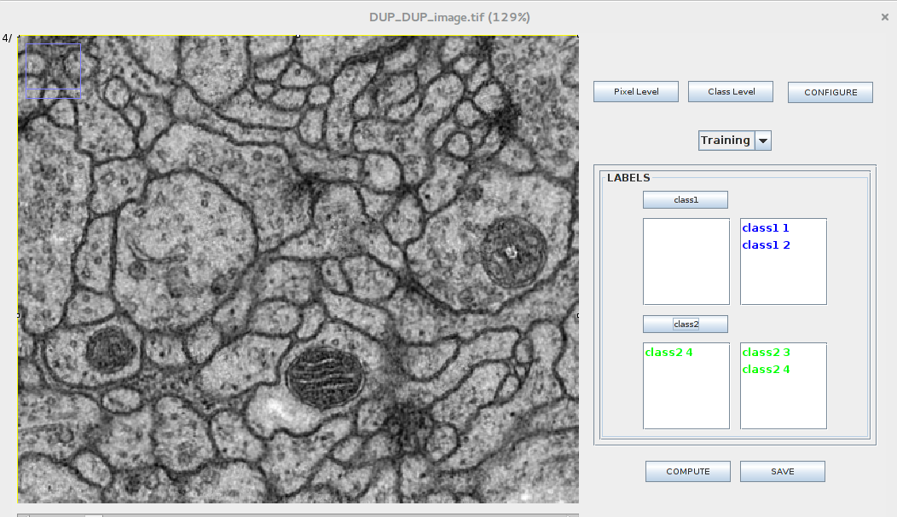
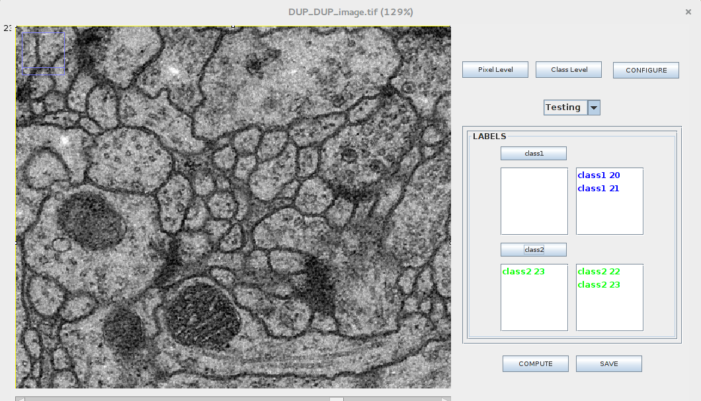
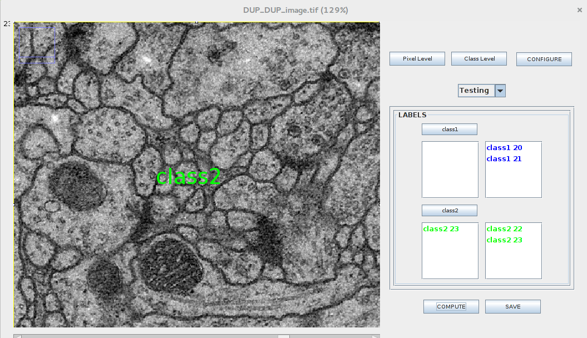

<!DOCTYPE html>
<html lang="en-us">
  <head>
    <meta charset="UTF-8">
    <title>Active Segmentation</title>
    <meta name="viewport" content="width=device-width, initial-scale=1">
    <link rel="stylesheet" type="text/css" href="stylesheets/normalize.css" media="screen">
    <link href='https://fonts.googleapis.com/css?family=Open+Sans:400,700' rel='stylesheet' type='text/css'>
    <link rel="stylesheet" type="text/css" href="stylesheets/stylesheet.css" media="screen">
    <link rel="stylesheet" type="text/css" href="stylesheets/github-light.css" media="screen">
    <script src='https://cdnjs.cloudflare.com/ajax/libs/mathjax/2.7.0/MathJax.js?config=TeX-MML-AM_CHTML'></script>
  </head>
  <body>
    <section class="page-header">
      <h1 class="project-name">Active Segmentation</h1>
        <h2 class="project-tagline">Active Segmentation Plugin for ImageJ - GSOC 2017</h2>
      <a href="https://github.com/mukesh14149/GOOGLESUMMERCODE2016" class="btn">View on GitHub</a>
      <a href="https://github.com/mukesh14149/GOOGLESUMMERCODE2016/zipball/master" class="btn">Download .zip</a>
      <a href="https://github.com/mukesh14149/GOOGLESUMMERCODE2016/tarball/master" class="btn">Download .tar.gz</a>
      <a href="https://github.com/mukesh14149/GOOGLESUMMERCODE2016/raw/master/jars/Weka_Segmentation_.jar" class="btn">Download Jar for imageJ</a>	
    </section>

    <section class="main-content">
	<h1>
<a id="developers" class="anchor" href="#developers" aria-hidden="true"><span class="octicon octicon-link"></span></a>Developers</h1>

<p>Student: <a href="mukesh14149@iiitd.ac.in">Mukesh Gupta</a><br>
Mentor: <a href="dimiterpp@gmail.com">Dimiter Prodanov </a> <a href="sumit.3203@gmail.com">Sumit Kumar Vohra</a><br>
<h1>
<a id="organization" class="anchor" href="#organization" aria-hidden="true"><span class="octicon octicon-link"></span></a>Organization:</h1>

<p><a href="http://incf.org">International Neuroinformatics Coordinating Facility</a>   </p>

<h1>
<a id="project-description" class="anchor" href="#project-description" aria-hidden="true"><span class="octicon octicon-link"></span></a>Project description</h1>

<p>This project is about to provide the general purpose environment that allows biologists and other
domain experts to use transparently state-of-the-art techniques in machine learning to improve
their image segmentation results.<br>
ImageJ is a public domain Java image processing program extensively used in life sciences.
Active Segmentation plugin is the redesign of existing Trainable Weka Segmentation (TWS) of
ImageJ. The main functionality of the platform was already developed in the context of GSOC
2016 but the platform is still under development. In last Google summer of code, the major
focus was on integrating generic filter families and specifically on one family of filters i.e.
Gaussian Scale Space.
The Active Segmentation provides generic functionality and user friendly interface so that the user can include the state of the art filters and 
machine learning frameworks from the WEKA library:
<ul>
<li>Active learning.</li>
<li>Multi-instance learning designed by third party in a robust manner </li>
</ul>
In this Google summer of code we expanded the existing functionality of the Active Segmentation plugin. Earlier this tool only used for Segmentation, now functionality has been extended to classification of the images. We used Zernike Moments as a feature vector so we extracted zernike moments from the images and then used these features to train our SVM classifier to classify images.
<br>Zernike moments is the set of orthogonal Zernike polynomials defined over the polar coordinate space inside a unit circle. The two-dimensional Zernike moments of order p with repetition q of an image intensity function \[ f(r, \theta)\] are defined as
 <div style="font-size: 100%;">    
\[

  			Z_{pq}= \frac{p+1}{\pi} \int_{0}^{1} \int_{-\pi}^{+\pi} V_{pq}(r,\theta)rdrd\theta,\; |r| \le 1

\]    
<br>where p order Zernike polynomials are defined as 
\[ V_{pq}(r, \theta) = R_{pq}(r)e^{-jq\theta},\; j=\sqrt{-1} \]
<br>and the real-valued radial polynomials defined as
\[ R_{pq} = \sum_{k=0}^\frac{p-|q|}{2} (-1)^2 \frac{(p-k)!}{k!(\frac{p+|q|}{2}-k)!(\frac{p-|q|}{2}-k)!}r^{p-2k}\]
<br>where \[0\le|q|\le p,\; p-|q|\; is\;even,\; p\ge0\]
<br>It can be seen from the above formulae that Computation of Zernike radial polynomials will takes too much time when order goes high, so we have decided to use other recursive formula to compute Zernike radial polynomials
\[R_p^q(r) = r[R_{p-1}^{|q-1|}(r)+R_{p-1}^{q+1}(r)]-R_{p-2}^q(r)\]
<br>This Formulae has been taken from this <a href="http://neuroinformatics.be/wp-content/uploads/2017/03/Barmak2013_zernike1.pdf">paper</p>
</div> 
<iframe width="650" height="400"
src="https://www.youtube.com/embed/sVdp81GCrSo">
</iframe> 
</p>

<h1>


<a id="Filter-Framework" class="anchor" href="#Filter-Framework" aria-hidden="true"><span class="octicon octicon-link"></span></a>Filter Framework</h1>
<p>Filter Framework is responsible for automatic loading of filters. It automatically finds all JAR 
  files in the path and first level of subdirectories and those have implemented "IFilter" interface. 
 </p>
<p>Active Segmentation Filters Screen </p>
<ul>
<li>The right black marked box is used to enable the unselected filters. User need to double click on filter name to enable it </li>
<li>The settings for each filter is provided in the centre along with the shape of filter </li>
<li>Filters process is started using the "COMPUTE" button.</li>
<li>Filters meta data is dumped using the "SAVE" button.</li>
<li>The "View" button is used to view the filters result for each image slice. </li>
<li>The "Default" button is used to set the set default settings for the filter as provided by the developers .</li>
</ul>
<p>Earlier filter was applying on each slice of imageStack one by one which takes time for ALOG, BOG, LOG and GAUSSIAN is around 27 seconds but after applying filter on each slice parallely it comes down to 17 seconds.</p>


<h1>
<a id="Feature-Screen" class="anchor" href="#Feature-Screen" aria-hidden="true"><span class="octicon octicon-link"></span></a>Feature Screen</h1>
<p>Feature Screen of the active segmentation is very similar to the TWS(Trainable Weka Segmentation). It will start with two classes i.e 
Binary Classification   
</p>

<p>This screen showing the Class level pixel classification</p><br>
<p>User selects images which can be used for training purpose.</p>
<p>User selects images which can be used for testing purpose.</p>
<p>Classification Result would be show on top of the image.</p>  

<h2><a href="https://github.com/mukesh14149/GOOGLESUMMERCODE2016/issues"> Link to Bug list</a></h2>
    
    </section>
  
  </body>
</html>
